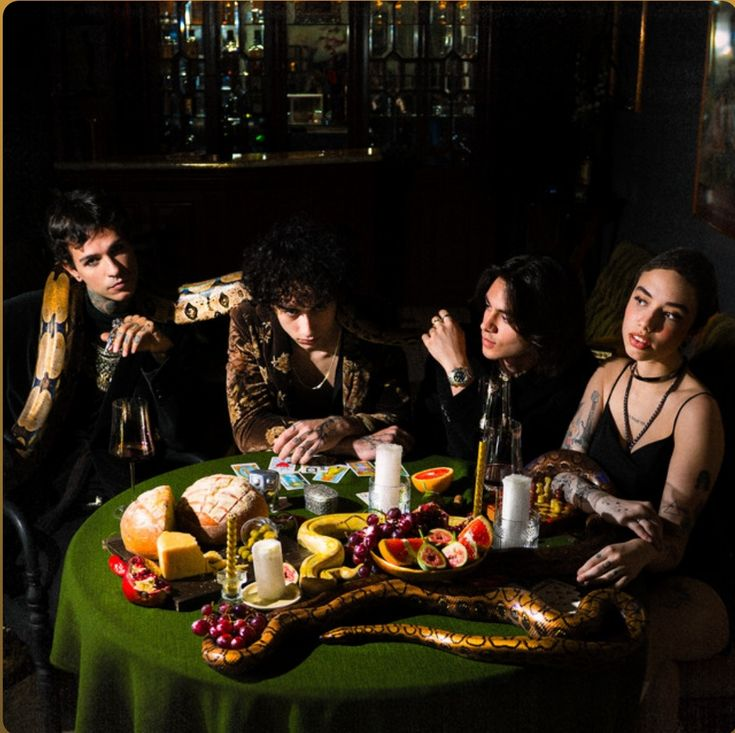
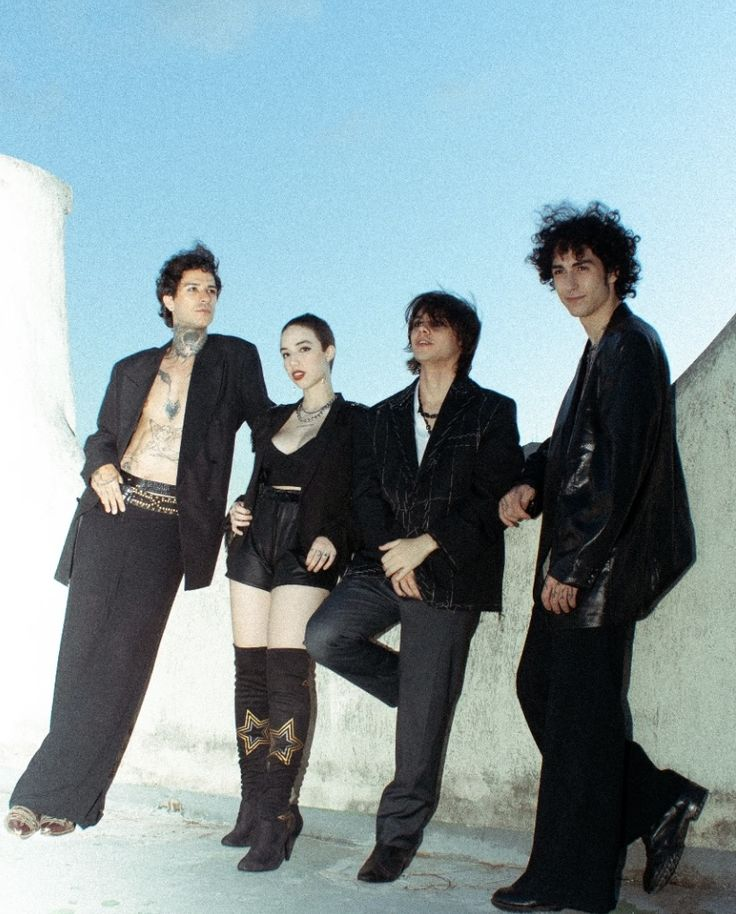

Bem vindo ao fanclub da Venere Vai Venus
temos varias musicas incluindo a mais famosa que é Anjos
Anjos é uma música da Venere Vai Venus que ganhou destaque no TikTok, sendo usada em vários vídeos e edits. A vibe melancólica e o refrão marcante fizeram a música grudar na cabeça e alcançar muita gente fora da bolha da banda.
A Venere Vai Venus é uma banda brasileira de rock alternativo/indie formada no final de 2022/2023 que surgiu da vontade de transformar sentimentos confusos, relações quebradas e aquela ansiedade constante da juventude em música. A banda foi criada por amigos que se conheceram através da cena underground e começaram a compor juntos sem grandes pretensões, apenas como uma forma de desabafo e expressão. Com o tempo, o som da Venere Vai Venus foi ganhando identidade própria, misturando letras melancólicas, instrumentais simples porém marcantes e uma estética crua, direta e emocional. Os integrantes da banda assumem diferentes influências do rock alternativo, indie, sempre priorizando a sinceridade nas composições. A banda é formada por seus membros principais — vocais, guitarra, baixo e bateria — que juntos constroem músicas que falam sobre amor mal resolvido, vazio existencial, nostalgia e a sensação de não se encaixar. Esse conjunto fez com que a Venere Vai Venus se conectasse facilmente com o público jovem. O reconhecimento começou a crescer quando a música “Anjos” viralizou no TikTok, sendo usada em diversos vídeos e edits, levando o som da banda para fora do circuito underground e alcançando novos ouvintes. Desde então, a Venere Vai Venus segue construindo sua trajetória de forma independente, mantendo a essência emocional que marcou seu início.
Vocalista
Lua Dultra é a vocalista, guitarrista e letrista da banda brasileira de rock Venere Vai Venus, reconhecida por sua voz intensa e presença de palco, tendo se apresentado em eventos como o Classic Hall. A banda, originária de São Paulo, mistura rock psicodélico com MPB e lançou o álbum “Divino” em 2025.

Guitarrista
Ávila é o guitarrista da banda, com influências do rock clássico e aprendizado de guitarra com seu pai, e também é formado em direito na usp
Baterista
Caio Luigi é o baterista e um dos membros fundamentais da banda de rock paulistana Venere Vai Vênus, Ele se destaca não apenas pela percussão, mas também por atuar na direção de videoclipes do grupo, como o da canção "Anjos", explorando narrativas cinematográficas e sombrias.
Baixista
Rey Sky (nome artístico de Renata Moita) é a baixista e vocalista da banda e também é artista, fotógrafa, modelo e yogi
Essa é nossa amada VENERE VAI VENUS⭐🤍 (escute o álbum Divino em todas as plataformas digitais💿)
